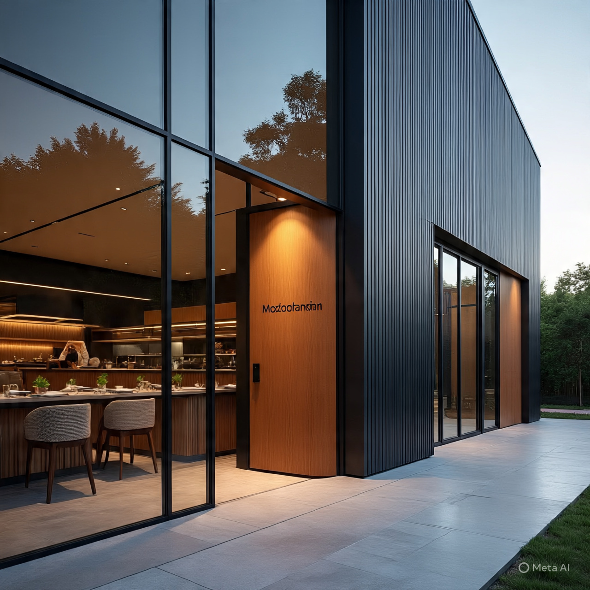

Bem-vindo à Gastronomia Moçambicana
O seu restaurante fictício de eleição para os melhores pratos da culinária tradicional de Moçambique. Explore o nosso menu e descubra os sabores autênticos da Xima, Muamba e Matapa.

O seu restaurante fictício de eleição para os melhores pratos da culinária tradicional de Moçambique. Explore o nosso menu e descubra os sabores autênticos da Xima, Muamba e Matapa.